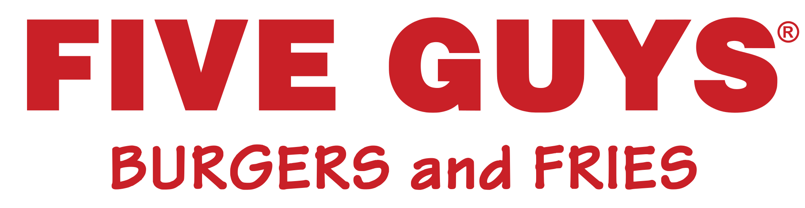
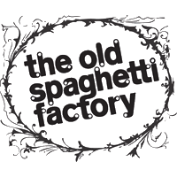

Good places to eat around CICCC
- Tim Hortons
- Starbucks
- Five Guys 
- The Old Spaghetti Factory 

Where: 433 Seymour St, Vancouver
Coisines: Coffe and Canadian

Where: 433 Seymour St, Vancouver
Coisines: Coffe and Canadian
Where: 635 Robson St, Vancouver
Coisines: American and Fast Food
Where: 53 Water St, Vancouver
Coisines: Italian
The top 5 restaurants in Vancouver on Tripadvisor
| NAME | Where | COISINES | MEALS |
|---|---|---|---|
| Jam Cafe | 556 Beatty St, Vancouver | Cafe, Canadian, Vegetarian Friendly, Vegan Options | Breakfast, Lunch, Brunch |
| Ramen Danbo | 1333 Robson St, Vancouver | Japanese, Asian, Soups, Vegetarian Friendly | Lunch, Dinner |
| AnnaLena | 1809 1st Ave W, Vancouver | Contemporary, Canadian, Vegetarian Friendly, Gluten Free Options | Dinner |
| Bauhaus Restaurant | 1 Cordova St W, British Columbia, Vancouver | European, Contemporary, German, Gluten Free Options, Vegetarian Friendly | Lunch, Dinner |
| Kingyo | 871 Denman St, Vancouver | Japanese, Asian, Vegetarian Friendly, Gluten Free Options, Vegan Options | Lunch, Dinner, After-hours |